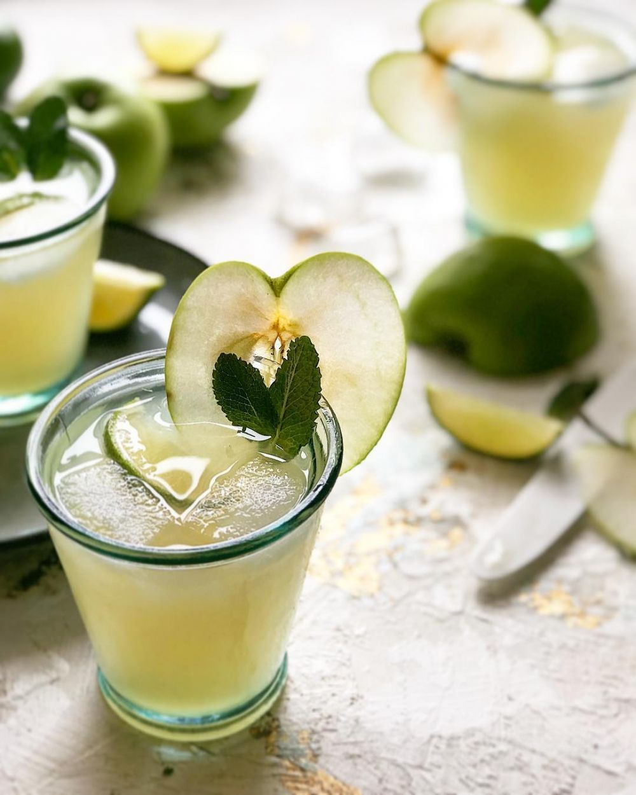

Apple Cooler

apple cooler merupakan sajian yang terbuat dari bahan seperti buah apel, jus apel serta bahan-bahan yang lainnya. Pastinya sajian minuman yang satu ini memiliki rasa yang super segar serta manis, bukan hanya rasanya yang segar dan manis namun sajian minuman ini kaya dengan vitamin.
Yaitu terdapat dari buah apelnya serta dari kandungan vitamin dari jusnya tersebut, bisa anda sajikan sajian minuman segar ini dengan tambahan cemilan yang anda sukai. Memang sajian ini sudah tersedia ditempat cafe yang menyediakan sajian minuman yang segar ini, namun jika anda sedang malas untuk bepergian alangkah baiknya jika anda buat sendiri dirumah dengan cara yang praktis.
Cara membuat: